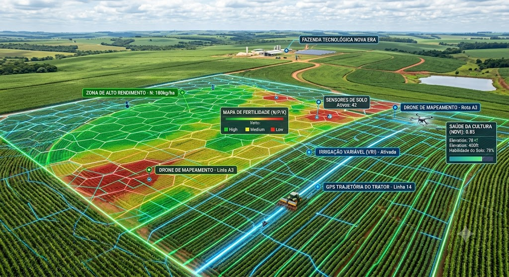
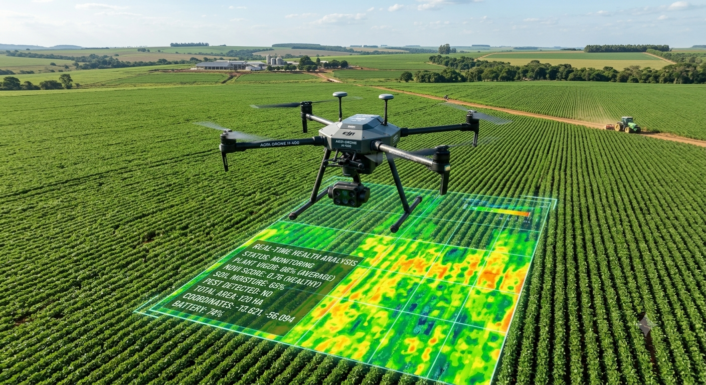

O Avanço Silencioso dos Microrganismos
A agricultura sustentável ganha espaço no debate global em um momento de pressão sobre custos, segurança alimentar, energia e mudanças climáticas. Segundo Luciana Gorab, especialista em Planejamento Estratégico de Vendas, esse cenário coloca o Brasil em posição de destaque por unir produtividade, inovação e capacidade de adaptação no campo.

Enquanto temas como inteligência artificial, guerras comerciais e a nova corrida energética dominam parte das discussões internacionais, uma transformação menos ruidosa vem fortalecendo o papel brasileiro na inovação agrícola. O avanço de tecnologias baseadas no uso de microrganismos nas lavouras mostra como o país pode contribuir para reduzir a dependência de fertilizantes químicos, um dos insumos mais caros e sensíveis da produção de alimentos.
O trabalho da microbiologista brasileira Mariangela Hungria ganhou projeção internacional após décadas dedicadas ao desenvolvimento de bactérias capazes de substituir parte dos fertilizantes industriais. Na prática, esses microrganismos capturam nitrogênio diretamente do ar e o transferem para as plantas.
Esse ponto tem peso estratégico. Fertilizantes nitrogenados dependem fortemente de gás natural, recurso sujeito a oscilações de preço, tensões geopolíticas e aumento dos custos energéticos. Nesse contexto, a tecnologia brasileira passa a ser vista como uma alternativa que combina ganhos de produtividade, sustentabilidade, redução de custos e aplicação tropical em escala global.
O reconhecimento internacional veio com o World Food Prize, frequentemente chamado de Nobel da Agricultura. Mais do que uma premiação, o destaque reforça uma mudança de percepção sobre o Brasil, que deixa de ser visto apenas como exportador de commodities e passa a ocupar espaço como protagonista em tecnologia agrícola sustentável.
“Num planeta preocupado com segurança alimentar, inflação e mudanças climáticas, talvez uma das soluções mais sofisticadas do século esteja justamente onde o Brasil sempre foi forte: no campo. Porque, às vezes, o verdadeiro ouro não está no solo. Está na inteligência de quem aprende a trabalhar com ele”
Quais os principais benefícios da Inteligência Artificial no campo?
A agricultura está passando por diversas transformações à medida que vai se modernizando e adotando inovações tecnológicas. A Inteligência Artificial (IA) faz parte desse movimento e promete revolucionar o setor, funcionando como solução poderosa para mitigar riscos climáticos e otimizar a gestão de recursos finitos.

Possibilidade de economizar a utilização de recursos naturais através de sistemas de irrigação inteligentes, sensores e sistemas que monitoram constantemente as condições do solo e das plantas, ajustando a irrigação de acordo com a necessidade real das culturas, reduzindo o desperdício de água e insumos.
Uso de drones equipados com câmeras dotadas de sensores RGB e multiespectrais para detectar prontamente indícios de infestação por ervas daninhas, incidência de doenças e falhas de plantio. Permite o planejamento preciso do sentido de plantio utilizando curvas de nível e taxas variáveis.
Análise de dados climáticos e históricos de produção para prever o rendimento das colheitas, ajudando os agricultores a antecipar eventos climáticos extremos, otimizar a logística e ajustar práticas em tempo real para maximizar a previsibilidade financeira.
Tratores, pilotos automáticos e maquinários autônomos equipados com navegação por GPS e sensores avançados executam tarefas complexas como plantio, pulverização e colheita com alta precisão milimétrica, mitigando a escassez de mão de obra intensiva.
A aplicação seletiva em taxa variável reduz o estresse biótico das plantas. Além disso, sistemas inteligentes promovem a rastreabilidade total de cada etapa da cadeia de suprimentos, garantindo total transparência e segurança alimentar do campo à mesa.
Ao minimizar desperdícios por meio de dosagens cirúrgicas de defensivos, água e fertilizantes, a Inteligência Artificial mitiga drasticamente a pegada ecológica das operações agrícolas em larga escala, conservando a biodiversidade do solo.

Comunidade & Insights
Deixe sua opinião ou dúvida sobre o impacto da Inteligência Artificial no agronegócio brasileiro.
Excelente artigo! O uso dos inoculantes biológicos citados junto com análises preditivas de IA reduziu nossos custos com NPK em quase 30% nesta última safra.